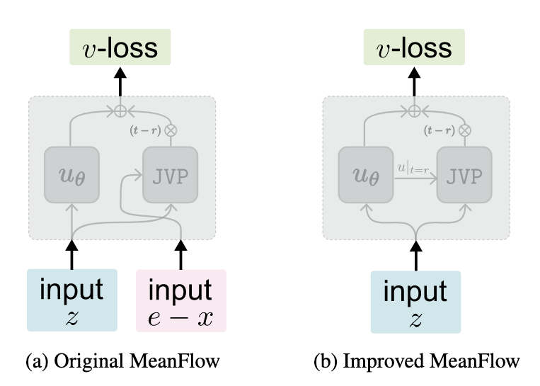
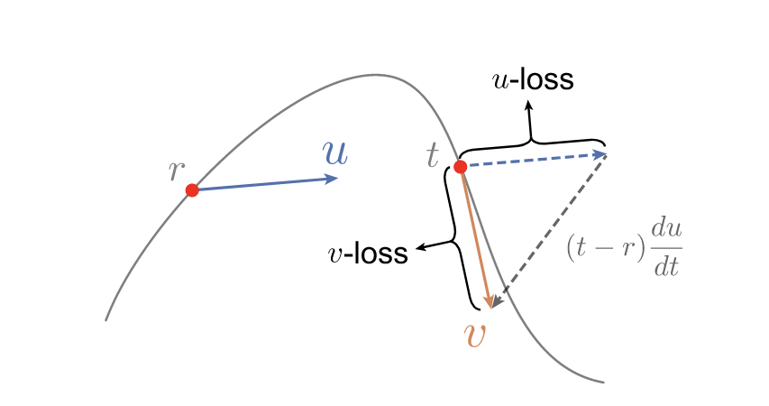

Improved Mean Flow (iMF)
To understand exactly why predicting instantaneous velocity (\(v\)) fixes the problem, we have to look at how variance propagates through the Jacobian matrix during optimization.
The core difference lies in the mathematical distinction between conditional velocity and marginal velocity, and where these vectors are placed in the loss function.
Here is the mathematical breakdown of the problem and the solution.
1. The Core Variables
In the standard Flow Matching framework, we define a linear path between data \(x\) and noise \(e\):
\[z_t = (1-t)x + te\]
From this, two types of velocities emerge:
- Conditional Velocity (\(v_c\)): The exact velocity of the specific trajectory from \(x\) to \(e\). It is defined as \(v_c = e - x\).
- Marginal Velocity (\(v(z_t)\)): For a given point \(z_t\), there are infinite pairs of \((x, e)\) that could have created it. The marginal velocity is the expectation over all those possible paths: \(v(z_t) = \mathbb{E}[e - x | z_t]\).
Crucially, given a fixed state \(z_t\), the marginal velocity \(v(z_t)\) is deterministic. The conditional velocity \((e-x)\) is highly stochastic because \(e\) is drawn from a pure Gaussian prior.

2. The Original MeanFlow (MF) Problem: Variance Multiplication
Original MF attempts to learn the average velocity \(u_\theta\) by matching a target that involves a Jacobian-Vector Product (JVP). Writing out the JVP explicitly as the Jacobian matrix \(\nabla_z u_\theta\) multiplied by a tangent vector, the apparent target is:
\[u_{tgt} \approx (e - x) - (t - r)\nabla_z u_\theta(z_t) \cdot (e - x)\]
The network is trained to minimize the difference between its prediction and this target:
\[\mathcal{L}_{MF} = ||u_\theta(z_t) - u_{tgt}||^2\]
The Mathematical Flaw: Look at the JVP term: \(\nabla_z u_\theta(z_t) \cdot (e - x)\).<br>The tangent vector input to the JVP is the highly stochastic conditional velocity \((e-x)\). As the paper points out, the variance of this conditional velocity is significantly magnified by the Jacobian matrix. Because you are multiplying the network's own derivative by a violently oscillating noise vector on every forward pass, the resulting loss is dominated by massive variance. This forces the optimizer to chase a highly erratic target, making the loss curve unstable and non-decreasing.
3. The Improved MeanFlow (iMF) Solution: Deterministic Tangents

iMF mathematically rearranges the MeanFlow identity into a standard Flow Matching regression problem (\(v\)-loss). They define a compound function \(V_\theta(z_t)\) that predicts the instantaneous velocity:
\[V_\theta(z_t) \triangleq u_\theta(z_t) + (t - r)\nabla_z u_\theta(z_t) \cdot v_\theta(z_t)\]
Notice the JVP term here: \(\nabla_z u_\theta(z_t) \cdot v_\theta(z_t)\).<br>Instead of the noisy \((e-x)\) vector, the input to the JVP is \(v_\theta(z_t)\), which is the network's own prediction of the marginal velocity.
Because \(v_\theta(z_t)\) is a deterministic function of the input \(z_t\), its variance for a given \(z_t\) is essentially zero. It is a smooth vector field. Passing this smooth vector through the Jacobian does not magnify any noise.
The overall network is then trained using a standard \(l_2\) regression loss against the conditional velocity:
\[\mathcal{L}_{iMF} = ||V_\theta(z_t) - (e - x)||^2\]
4. The Flow Matching Paradox
It might seem counterintuitive that iMF uses \((e-x)\) as the outer target, which seems like it would still introduce variance.
However, standard Flow Matching theory guarantees that minimizing an \(l_2\) loss against a noisy target \((e-x)\) mathematically forces the network to converge to the conditional expectation: \(\mathbb{E}[e-x | z_t] = v(z_t)\). When \((e-x)\) is on the *outside* of the prediction function, Stochastic Gradient Descent (SGD) naturally averages out the noise over mini-batches.
When \((e-x)\) is *inside* a nested derivative (as in original MF's JVP), SGD cannot simply average it out. The network is forced to rapidly shift its Jacobian matrix to satisfy a noisy equation at every single step, destroying gradient stability. iMF pulls the noise out of the derivative, letting the optimizer handle it the way it was designed to.